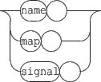

Next: 13. Signals and graphic
Up: 12. Virtual address space
Previous: 12.1 File watcher
Contents
Index
Each object has a debug sub-node for debugging purposes. This debug virtual node has 3 flags, that can be actived or desactived with 0 or 1:

- When the name flag is on, each scene component displays its bounding rectangle and name.
- When the map flag is on, each scene component displays its mappings.
- When the signal flag is on, each object (even the scene or the application) will, according to its type, emit 'performance related' signals (or no signal). This 'performance signal' is specific to the type of object. The name of 'performance signal' is of the form debug-objectName-SomeName. Currently, only the application, the scene and graph objects emit 'performance signals'.
Grame - Interlude project [ANR-08-CORD-010]